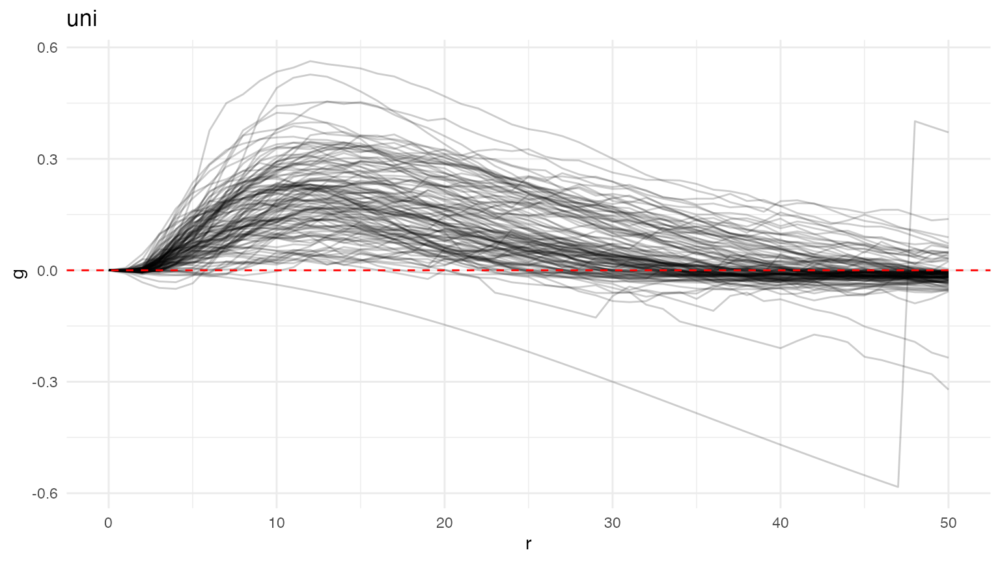
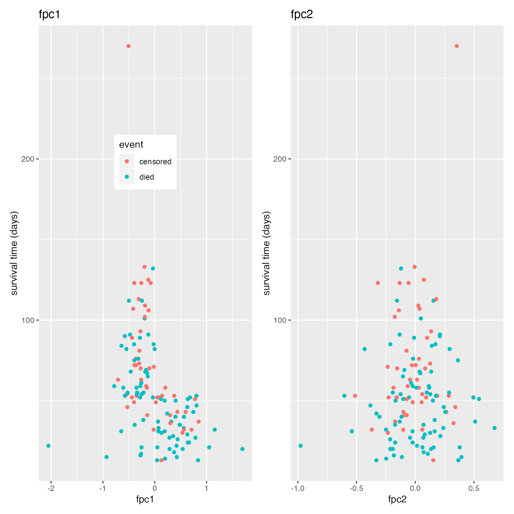
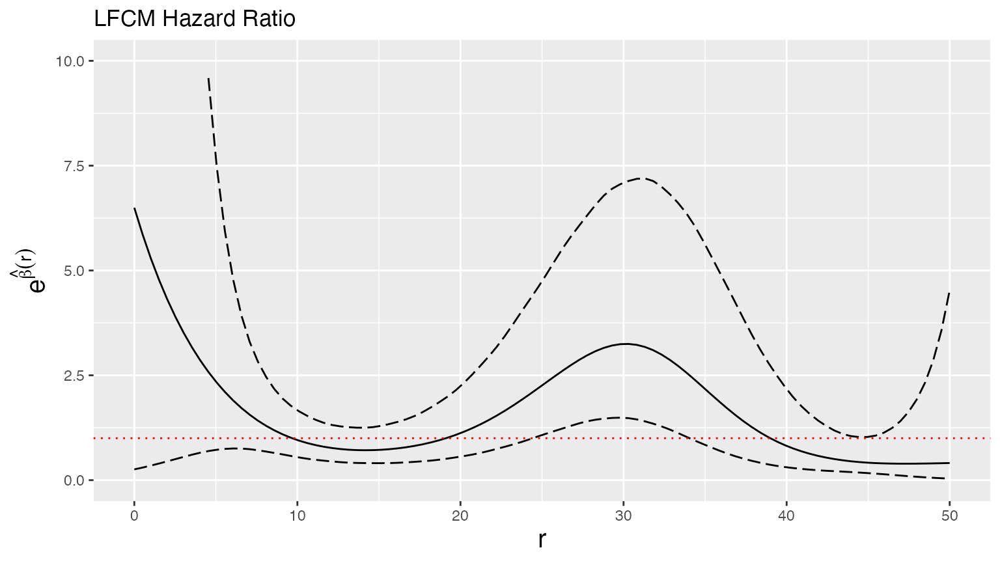
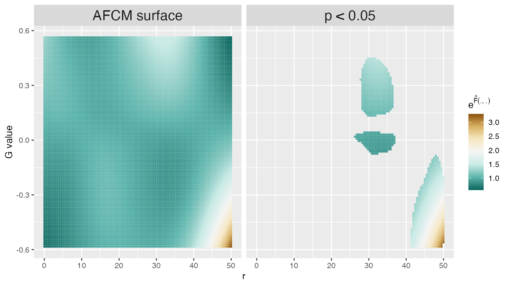
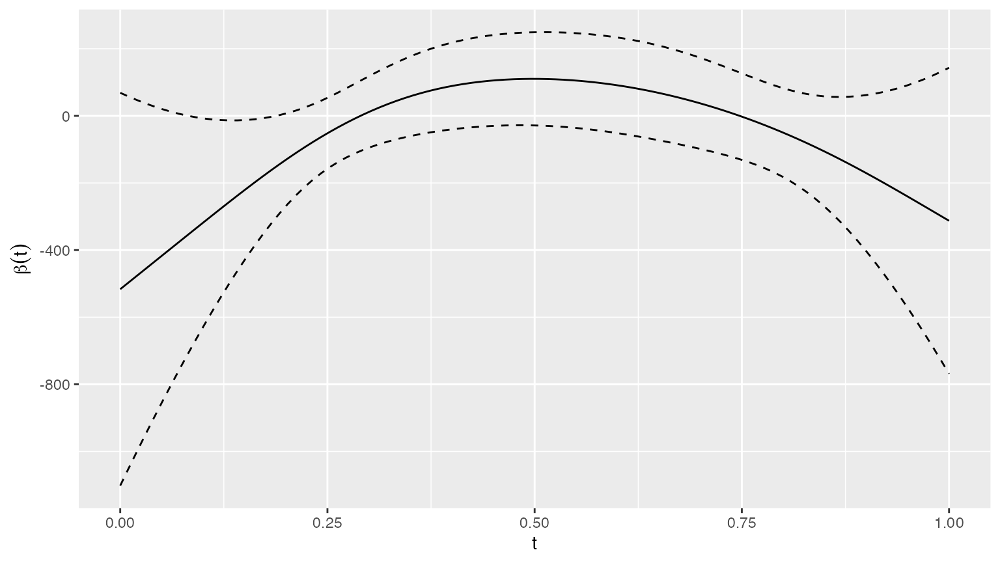
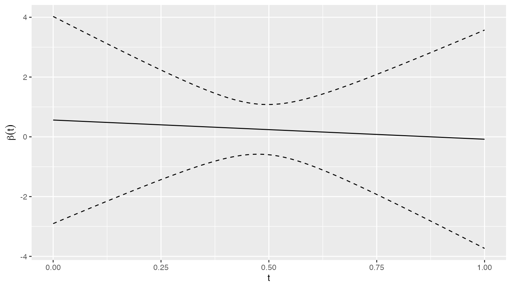

Functional regression with spatial summary functions as covariates
Source:vignettes/mx_funreg.Rmd
mx_funreg.RmdThe mxfda package contains tools for analyzing spatial
single-cell data, including multiplex imaging and spatial
transcriptomics, using methods from functional data analysis. Analyses
for this package are executed and stored using an S4 object of class
mxFDA. This vignette outlines how to perform functional
regression using spatial summary functions of multiplex image samples as
model covariates. To set up an mxFDA object from spatial
single cell data, calculate spatial summary functions, and perform
exploratory data analysis and visualization of these spatial summary
functions, see vignette("mx_fda"). To perform feature
extraction using functional principal component analysis, see
vignette("mx_fpca").
Ovarian cancer multiplex imaging data
Here we load data from the Ovarian cancer dataset where univariate
nearest-neighbor G-functions for immune cells have already been
estimated. See the vignette mxfda::mx_fda for more details
on extracting spatial summary functions.
data("ovarian_FDA")We visualize these functions below.
plot(ovarian_FDA, y = "fundiff", what = "uni g") +
geom_hline(yintercept = 0, color = "red", linetype = 2) +
theme_minimal() +
ggtitle("Nearest neighbor G-functions for immune cells")
Functional regression models for survival outcomes
Single-cell imaging is common in cancer applications, where the analysis goal is to relate cell-level spatial information to patient-level time-to-event outcomes like overall survival or time-to-recurrence. Cox regression is a popular regression technique for assessing the association between covariates and a survival outcome. The standard Cox model is given by
\[\log h_i(t) = \log h_0(t) + \sum_{p = 1}^P \gamma_p Z_{ip},\]
where \(h_i(t)\) is the hazard rate for subject \(i\) and \(h_0(t)\) is an unspecified baseline hazard. Each \(Z_{ip}\) is a scalar covariate, and \(P\) is the total number of scalar covariates. These are covariates like age, sex, treatment group, etc and can be contrasted with spatial summary functions which are known as functional covariates. The \(\gamma_p\) are regression coefficients; these are interpreted as log hazard ratios.
For single cell spatial data, we have a spatial summary function for each subject (e.g. univariate Ripley’s K), \(X_i(r)\), that we want to add to the Cox regression model as a functional covariate. Below we provide three different strategies for incorporating \(X_i(r)\) into a Cox regression model as a covariate.
Cox regression using functional principal components as covariates
In this approach, we first decompose the spatial summary functions using FPCA, then use subject-specific scores from FPCA as covariates in a Cox regression model. Conceptually, we are fitting the model given by
\[\log h_i(t) = \log h_0(t) + \sum_{p = 1}^P \gamma_p Z_{ip} + \sum_{k = 1}^K \beta_k c_{ik},\]
where \(c_{ik}\) is the \(k\)th score from functional principal
components analysis for the \(i\)th
subject. \(K\) represents the number of
principal components, usually selected to explain at least 95% of the
variance in the spatial summary functions (see
vignette("mx_fpca")). The \(\beta_k\) are regression coefficients that
tell us about the association between overall survival and the \(k\)th functional principal component. Like
the \(\gamma_p\), the the \(\beta_k\) are interpreted as log hazard
ratios, and \(e^{\beta_k}\) is a hazard
ratio. This is the approach to Cox regression with spatial summary
functions as covariates taken in Vu et al.
(2023).
The code below runs FPCA the G-functions from the ovarian cancer data
and calculates principal components that explain up to 99% variance
using the argument pve. The argument
lightweight = TRUE returns only what is needed for
downstream analysis. To return all items calculate by FPCA when using
refund::fpca.face, use
lightweight = FALSE.
ovarian_FDA <- run_fpca(ovarian_FDA, metric = "uni g", r = "r", value = "fundiff",
lightweight = TRUE,
pve = .99)
ovarian_FDA
#> mxFDA Object:
#> Subjects: 128
#> Samples: 128
#> Has spatial data
#> Univariate Summaries: Gest
#> Bivariate Summaries: None
#> FPCs Calculated:
#> Gest: 6 FPCs describe 99.2% variance
#> MFPCs not yet calculated
#> FCMs not yet calculated
#> MFCMs not yet calculated
#> Scalar on Functional Regression not calculatedSix FPCs were returned. Below, we extract the fpca scores from the
ovarian_FDA object and visualize the relationship between
the first two FPC scores and survival time.
Gdf_fpc = extract_fpca_scores(ovarian_FDA, 'uni g fpca')
p1 = Gdf_fpc %>%
mutate(event = factor(event, levels = 0:1, labels = c("censored", "died"))) %>%
ggplot(aes(fpc1, survival_time, color = event)) +
geom_point() +
labs(y = "survival time (days)", title = "fpc1") +
theme(legend.position = c(.5, .7))
p2 = Gdf_fpc %>%
mutate(event = factor(event, levels = 0:1, labels = c("censored", "died"))) %>%
ggplot(aes(fpc2, survival_time, color = event)) +
geom_point() +
labs(y = "survival time (days)", title = "fpc2") +
theme(legend.position = "none")
ggarrange(p1, p2, nrow = 1, ncol = 2)
It appears that subjects with lower scores for FPC 1 tended to have longer survival times.
Next, we use these scores as covariates in a Cox regression model. We also control for age.
library(survival)
phmod_fpc = coxph(Surv(survival_time, event) ~ fpc1 + fpc2 + fpc3 + fpc4 + age,
data = Gdf_fpc)The results from this model are printed below in a tidy format. Note that all FPCs except FPC 2 have a statistically significant relationship with overall survival. The hazard ratio above 1 for FPC 1 indicates that higher scores are associate with worse survival outcomes, which is consistent with the exploratory analysis in the plot above.
tidy(phmod_fpc, exp = TRUE, conf.int = TRUE) %>%
mutate(p.value = format.pval(p.value, digits = 1)) %>%
select(term, hazard_ratio = estimate, conf.low, conf.high, p = p.value) %>%
knitr::kable(digits = 2)| term | hazard_ratio | conf.low | conf.high | p |
|---|---|---|---|---|
| fpc1 | 4.38 | 2.58 | 7.46 | 5e-08 |
| fpc2 | 1.16 | 0.46 | 2.89 | 0.754 |
| fpc3 | 62.67 | 7.24 | 542.16 | 2e-04 |
| fpc4 | 0.04 | 0.00 | 0.67 | 0.026 |
| age | 1.03 | 1.01 | 1.05 | 0.009 |
Linear and additive functional Cox regression models
Linear and additive functional Cox regression models were used in Vu et al. (2022) to model the relationship between survival and spatial summary functions without having to first decompose the spatial summary functions using FPCA. Linear functional cox regression was first introduced by Gellar et al. (2015) and takes the form:
\[\log h_i(t;Z_i, X_i) = \log h_0(t) + \sum_{p = 1}^P \gamma_p Z_{ip} + \int_{r = 0}^R \beta(r)X_i(r)dr,\]
where \(X_i(r)\) is the spatial summary function for subject \(i\), and \(\beta(r)\) is a coefficient function. For this model, the coefficient function is a log hazard ratio for the spatial summary function at radius \(r\). In effect, this allows us to model the association between of spatial clustering and survival at many different radii simultaneously. Here \(X_i(r)\) is considered a functional covariate, and the \(Z_{ip}\) are scalar covariates.
Linear functional Cox model (LFCM)
The code below runs an LFCM for the G-functions from the ovarian
cancer data with age as a scalar covariate. Setting the argument
afcm = FALSE runs an LFCM instead of an AFCM.
ovarian_FDA = run_fcm(ovarian_FDA, model_name = "fit_lfcm",
formula = survival_time ~ age, event = "event",
metric = "uni g", r = "r", value = "fundiff",
afcm = FALSE)Below we print the class and summary of the extracted model.
class(extract_model(ovarian_FDA, 'uni g', 'cox', 'fit_lfcm'))
#> [1] "lfcm" "gam" "glm" "lm"
summary(extract_model(ovarian_FDA, 'uni g', 'cox', 'fit_lfcm'))
#>
#> Family: Cox PH
#> Link function: identity
#>
#> Formula:
#> survival_time ~ age + s(t_int, by = l_int * func, bs = "cr",
#> k = 20)
#>
#> Parametric coefficients:
#> Estimate Std. Error z value Pr(>|z|)
#> age 0.03083 0.01136 2.714 0.00664 **
#> ---
#> Signif. codes: 0 '***' 0.001 '**' 0.01 '*' 0.05 '.' 0.1 ' ' 1
#>
#> Approximate significance of smooth terms:
#> edf Ref.df Chi.sq p-value
#> s(t_int):l_int * func 4.286 4.759 41.02 4.76e-07 ***
#> ---
#> Signif. codes: 0 '***' 0.001 '**' 0.01 '*' 0.05 '.' 0.1 ' ' 1
#>
#> Deviance explained = 5.72%
#> -REML = 314.14 Scale est. = 1 n = 128Finally, we visualized the estimated coefficient function, \(\hat{\beta}(r)\), from this model. The code below extracts this quantity, then plots \(\hat{\beta}(r)\) as a solid black line and 95% pointwise confidence intervals as dotted black lines. Values of the radius \(r\) where the 95% confidence interval does not contain zero are statistically significant.
lfcm_surface = extract_surface(ovarian_FDA, metric = "uni g", model = "fit_lfcm", analysis_vars = c("age"))
plot(lfcm_surface)
Additive functional Cox model (AFCM)
Additive functional cox regression was first introduced by Cui, Crainiceanu, and Leroux (2021) and takes the form:
\[\log h_i(t;Z_i, X_i) = \log h_0(t) + \sum_{p = 1}^P \gamma_p Z_{ip} + \int_{r = 0}^R F\left(r, X_i(r)\right)dr.\]
This model is slightly more flexible than the LFCM, in that it allows the relationship between \(X_i(r)\) and survival to vary nonlinearly with \(r\).
The code below runs an AFCM with age as a scalar covariate. Setting
the argument afcm = TRUE runs an AFCM.
ovarian_FDA <- run_fcm(ovarian_FDA, model_name = "fit_afcm",
formula = survival_time ~ age, event = "event",
metric = "uni g", r = "r", value = "fundiff",
afcm = TRUE)
class(extract_model(ovarian_FDA, 'uni g', 'cox', 'fit_afcm'))
#> [1] "afcm" "gam" "glm" "lm"
summary(extract_model(ovarian_FDA, 'uni g', 'cox', 'fit_afcm'))
#>
#> Family: Cox PH
#> Link function: identity
#>
#> Formula:
#> survival_time ~ age + ti(t_int, func, by = l_int, bs = c("cr",
#> "cr"), k = c(10, 10), mc = c(FALSE, TRUE))
#>
#> Parametric coefficients:
#> Estimate Std. Error z value Pr(>|z|)
#> age 0.02852 0.01162 2.454 0.0141 *
#> ---
#> Signif. codes: 0 '***' 0.001 '**' 0.01 '*' 0.05 '.' 0.1 ' ' 1
#>
#> Approximate significance of smooth terms:
#> edf Ref.df Chi.sq p-value
#> ti(t_int,func):l_int 8.248 10.52 55.88 <2e-16 ***
#> ---
#> Signif. codes: 0 '***' 0.001 '**' 0.01 '*' 0.05 '.' 0.1 ' ' 1
#>
#> Deviance explained = 10.7%
#> -REML = 310.05 Scale est. = 1 n = 128The AFCM model produces a coefficient surface, \(\hat{F}\left(r, X_i(r)\right)\), rather than a coefficient function. The code below extracts this estimated surface, then on the left plots the surface, and on the right plots regions of the surface that are statistically significant at the 95% confidence level.
afcm_surface = extract_surface(ovarian_FDA, metric = "uni g", model = "fit_afcm", analysis_vars = c("age"), p = 0.05)
plot(afcm_surface)
Model summaries and C-index
C-index is a good way to compare across models, especially when incorporating cross validation. Larger c-index is indicative of a better predictive model. Below, we calculate the c-index for each model.
fit_afcm = extract_model(ovarian_FDA, 'uni g', 'cox', 'fit_afcm')
fit_lfcm = extract_model(ovarian_FDA, 'uni g', 'cox', 'fit_lfcm')
c_index = c(
phmod_fpc$concordance[["concordance"]],
extract_c(fit_lfcm, Gdf_fpc$survival_time, Gdf_fpc$event),
extract_c(fit_afcm, Gdf_fpc$survival_time, Gdf_fpc$event)
)
tibble(model = c("fpc", "lfcm", "afcm"), c_index) %>%
knitr::kable(digits = 2)| model | c_index |
|---|---|
| fpc | 0.71 |
| lfcm | 0.73 |
| afcm | 0.76 |
Functional regression models for binary and continuous outcomes
Models with continuous or binary scalar outcomes and functional covariates are also possible, and are referred to as scalar-on-function regression (sofr) models in the functional data analysis literature (Goldsmith et al. (2011)).
Continuous outcome
Below we fit a sofr model with age as the outcome, G-functions from
the ovarian cancer data as the functional covariate, and no additional
scalar covariates using the run_sofr() function.
ovarian_FDA <- run_sofr(ovarian_FDA,
model_name = "fit_sofr_age",
formula = age ~ 1,
metric = "uni g", r = "r", value = "fundiff")This model also produces an estimated coefficient surface \(\hat{\beta}(r)\), which can be visualized. The code below extracts this quantity, then plots \(\hat{\beta}(r)\) as a solid black line and 95% pointwise confidence intervals as dotted black lines. Values of the radius \(r\) where the 95% confidence interval does not contain zero are statistically significant. At each radius value \(r\), for a continuous outcome \(\hat{\beta}(r)\) can be interpreted as a regular linear regression coefficient.
model = extract_model(ovarian_FDA, 'uni g', type = 'sofr', model_name = 'fit_sofr_age')
plot(model, ylab=expression(paste(beta(t))), xlab="t")
Binary outcome
Below we fit a sofr model with stage as the outcome, G-functions from
the ovarian cancer data as the functional covariate, and age as a scalar
covariate. Stage is a binary outcome, and as a result this model can
also be called functional logistic regression. When the outcome
is binary, you need to specify the argument
family = "binomial". In addition, the outcome should be
coded as a numeric rather than a factor or character variable.
ovarian_FDA <- run_sofr(ovarian_FDA,
model_name = "fit_sofr_stage",
formula = stage ~ age,
family = "binomial",
metric = "uni g", r = "r", value = "fundiff")When the outcome is binary \(\hat{\beta}(r)\) is interpreted as a log odds ratio at each radius \(r\).
model = extract_model(ovarian_FDA, 'uni g', type = 'sofr', model_name = 'fit_sofr_stage')
plot(model, ylab=expression(paste(beta(t))), xlab="t")